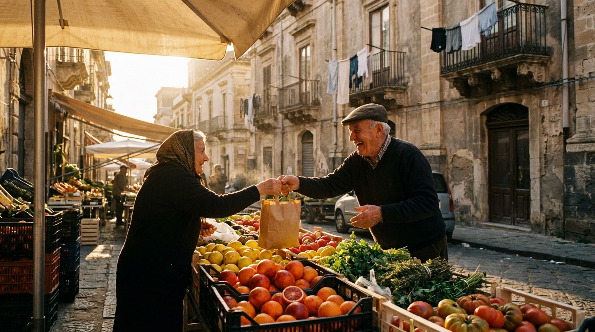
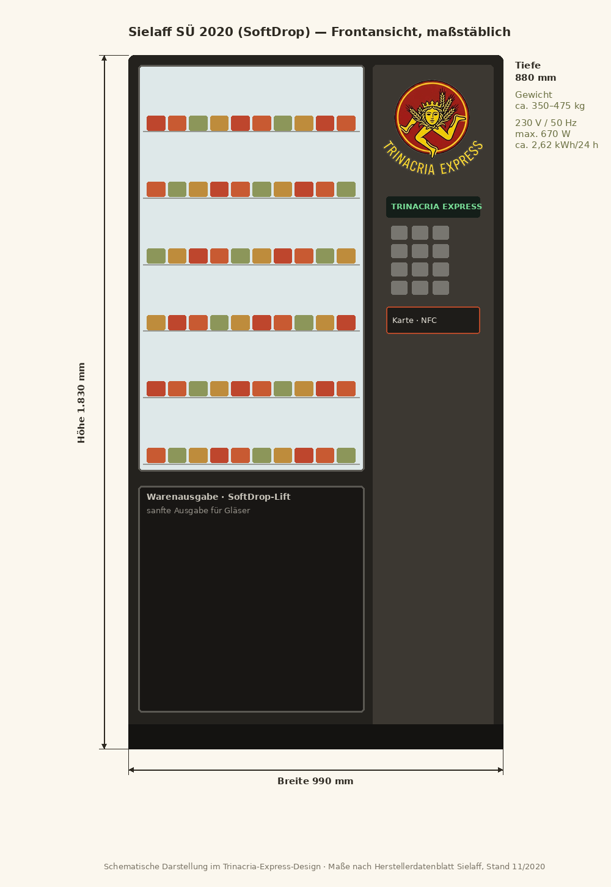

Sizilien → Deutschland
Aus unserer Erde,
in eure Hände.
Bio-Spezialitäten aus Sizilien, direkt geliefert. Keine Abkürzungen — nur Sonne, Salz und sizilianische Geduld.
Den Laden entdecken
Unsere Geschichte
Zwei Länder,
eine Linie.
Trinacria Express ist genau das, wonach es klingt: eine direkte Verbindung. Von den Feldern und Manufakturen Siziliens auf deutsche Tische — ohne Zwischenhändler, ohne Umwege.
Dahinter stehen zwei Menschen: Massimiliano aus Palermo und Michael aus Österreich, der seit sechs Jahren in Sizilien lebt. Der eine kennt die Erzeuger, der andere den Weg nach Norden.
Unser Sortiment kommt aus biologischer Landwirtschaft, wird ausschließlich mit nativem Olivenöl extra hergestellt und kommt ohne Konservierungsstoffe aus.
Lernt uns kennenDas Sortiment
Unser Sortiment
23 Bio-Spezialitäten aus Sizilien — mit nativem Olivenöl extra und ohne Konservierungsstoffe — sowie 7 Gelato-Klassiker von PEPINO 1884 aus Turin. Preise auf Anfrage: Stellt euch eure Liste zusammen und schickt sie uns.
Unsere Leute
Die zwei hinter dem Express

Massimiliano di Lorenzo
Palermo, Sizilien
«Ich bin in Palermo aufgewachsen. Ich weiß, welche Sauce nach Sonne schmeckt und welche nur nach Etikett.»

Michael Schnitzer-Trpin
Österreich · seit 6 Jahren in Sizilien
«Ich kam aus Österreich her und bin geblieben. Sechs Jahre später kenne ich beide Seiten der Strecke.»
Aufstellorte gesucht
Unsere Verkaufsautomaten.
Ein Automat muss nicht Chips und Schokoriegel bedeuten. Unserer ist eine kleine sizilianische Bottega, die rund um die Uhr geöffnet hat: Sugo, Pesto, Caponata, Marmeladen, Pistaziencreme — alles bio, alles im Glas.
Wir betreiben den Sielaff SÜ 2020 in der SoftDrop-Ausführung und suchen dafür Aufstellorte und Kooperationspartner in und um München: Betriebe, Foyers, Wohnanlagen, Hotels, Sportstätten, Einkaufszentren, Campingplätze, Ferienwohnungen.
Drei Modelle — sucht euch eins aus
Miete
Ihr stellt die Fläche, wir zahlen eine feste monatliche Miete. Planbar, unkompliziert, kein Aufwand für euch.
Umsatzbeteiligung
Ihr werdet am Umsatz beteiligt. Läuft der Automat gut, verdient ihr mit. Läuft er schlecht, zahlt ihr nichts.
Gratis-Produkte
Statt Geld gibt es Ware: ein monatliches Kontingent aus unserem Sortiment für euch, euer Team oder eure Gäste.

Der Automat: Sielaff SÜ 2020 (SoftDrop)
Unsere Ware ist in Glas verpackt. Ein normaler Spiralautomat lässt die Produkte fallen — das überlebt kein Glas. Das SoftDrop-Liftsystem holt das Produkt aus dem Fach und setzt es sanft in der Ausgabe ab.
| Maße (H × B × T) | 1.830 × 990 × 880 mm |
|---|---|
| Gewicht | ca. 300–475 kg, je nach Ausführung (ohne Ware) |
| Kapazität | bis 60 Wahlen · 6 Ebenen à 10 Fächer · ca. 675–900 Artikel |
| Stromanschluss | 220–230 V, 50/60 Hz, 6–10 A — normale Schuko-Steckdose, kein Starkstrom |
| Leistungsaufnahme | max. 670 W |
| Stromverbrauch | ca. 2,62 kWh / 24 h bei 25 °C — rund 950–1.060 kWh im Jahr |
| Umgebung | Innenaufstellung, +5 °C bis +32 °C · LED-Beleuchtung mit Nachtabsenkung |
| Bezahlung | bargeldlos: Girocard, Kreditkarte, Apple Pay, Google Pay — optional Münzeinwurf |
Technische Angaben nach Herstellerdatenblatt Sielaff GmbH & Co. KG, Herrieden.
Was wir vom Standort brauchen
Platz
ca. 2 m²
Stellfläche 1,0 × 0,9 m, dazu ca. 10 cm Wandabstand und rund 0,9 m Türöffnungsbereich nach vorn. Ebener, tragfähiger Boden (Punktlast bis ca. 500 kg mit Ware).
Strom
1 × Schuko
Eine gewöhnliche 230-V-Steckdose (10 A) in max. 1,5 m Reichweite. Kein Starkstrom, kein Wasseranschluss. Die Stromkosten übernehmen wir — pauschal oder per Zwischenzähler.
Netz
kein WLAN nötig
Der Automat meldet Füllstand, Umsatz und Störungen über Mobilfunk. Euer Netz bleibt außen vor.
Rest
machen wir
Anschaffung, Folierung, Befüllung (2× pro Woche, persönlich), Reinigung, Wartung, HACCP-Dokumentation, Haftpflichtversicherung.
Ihr habt eine Fläche? Schreibt uns kurz, wo sie liegt und wie viele Menschen täglich vorbeikommen. Wir melden uns innerhalb von zwei Tagen — und bringen zum Gespräch das Sortiment zum Probieren mit.
Fläche anbietenKontakt
Sprecht direkt mit uns.
Trinacria Express wird von zwei Menschen betrieben — kein Callcenter, keine Warteschleife. Fragen zu Produkten, Mustern, Mengen oder Preisen? Meldet euch einfach.
Betreiber & Kontakt
Massimiliano di Lorenzo
Betreiber & Kontakt
Michael Schnitzer-Trpin